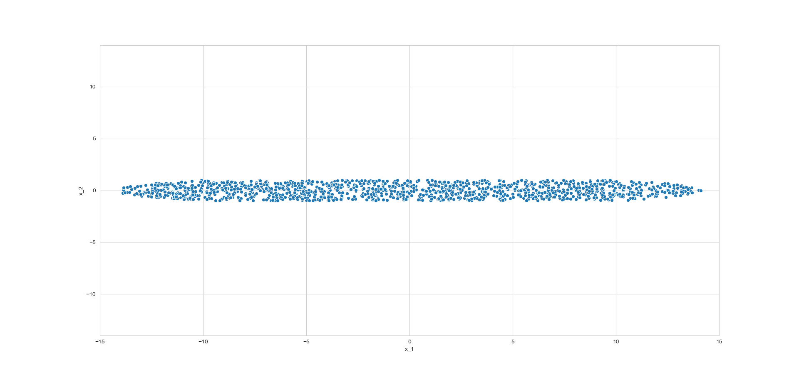
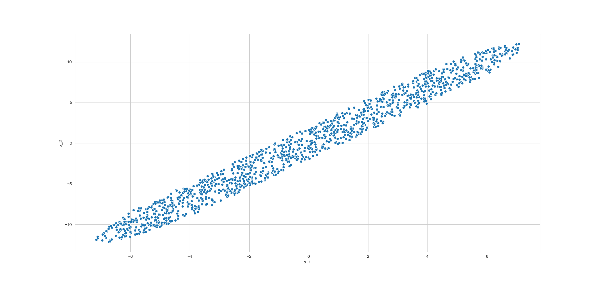

>
Principal Component Analysis
Get overall idea of PCA, learn how the mathematics behind it works applying the concepts of rotation of axes, eigen value and eigen vectors. Finally code everything from scratch and satisfy yourself seeing our output matches with scikit-learn!
Introduction
Suppose our \(n\) feature vectors \(\vec{x}_1, \ \vec{x}_2, \ \vec{x}_3, \ ...,\ \vec{x}_n\) are 2 dimensional. As, we always prefer to create model with fewer number of variables whenever possible, we want to drop one among the two regressors. Now consider, two cases,
Case 1

We see that, variance in x_2 is much less than x_1; ie. x_2 remain more or less same even if the dependent variable \(y\) changes. In simple terms \(y\) does not dependent on x_2 as it depends on x_1. Here we can even say that, it does not depend at all (with little risk). So, we can safely drop it.
Case 2
Now suppose now scatter plot x_1 vs x_2 looks like this,

Here we cannot say that variance of one variable is much less than the other, there is enough variance in both of the axis. But suppose we are desparate to drop one of the variable. If we consider the red arrow direction in the picture, we see that in this direction variation is much less than the blue arrow direction. This observation is the key to the Principal Component Analysis. If we rotate our axis so that our x_1 axis meets blue arrow and the x_2 axis meets the red arrow, then in the resulting rotated axis we can drop the rotated x_2 axis. Also we can rotate so that we drop the x_1 axis. But we take the approach to drop the later variable (x_2). If we generalise the above concept for multivariate set up, we get,
Rotate the original axes so that variance of the first rotated axis > variance of the next rotated axis > ... and so on.
Doing the Mathematics
Suppose \(\vec{x}\) is our p dimensional feature vector. We want to rotate our original axes, ie. we want a orthogonal matrix \(Q\) (ie. \(Q^TQ = I\)) such that,
\[Q.\vec{x} = \begin{pmatrix} \vec{Q_1} \\ \vec{Q_2} \\ \vec{Q_3} \\ . \\ . \\ . \\ \vec{Q_p} \end{pmatrix}.\vec{x} = \begin{pmatrix} \vec{Q_1}.\vec{x} \\ \vec{Q_2}.\vec{x} \\ \vec{Q_3}.\vec{x} \\ . \\ . \\ . \\ \vec{Q_p}.\vec{x} \end{pmatrix} = \begin{pmatrix} P_1\\ P_2 \\ P_3 \\ . \\ . \\ . \\ P_n \end{pmatrix} = \vec{P}\]
Here \(Q_i\)s are row vectors and \(P_i\)s are scalar.
Now we have to determine a \(Q\) so that in \(P\), \(var(P_1) > var(P_2) > var(P_3) > ... > var(P_p)\)
Note: Here sum of variances of \(P_i\)s and sum of variances of the original \(x_i\) are same. As,
\[\sum_{i=1}^{p} var(P_i) = Trace(var(Q.\vec{x})) = Trace(Q\Sigma Q^T) = Trace(Q^TQ\Sigma) = Trace(\Sigma) = \sum_{i=1}^p var(x_i)\]
\(\Sigma\) is the variance covariance matrix of \(\vec{x}\).
Getting First Axis
We know that \(\Sigma \) is a variance covariance matrix, hence it is positive definite, and we can eigen decompose it. Keeping in mind,
\begin{align*}
var(P_1)
&= var(\vec{Q_1}.\vec{x}) \\
&= Q_1.var(\vec{x}).Q_1^T \\
&\left.\begin{aligned}
&= Q_1.\Sigma Q_1^T \\
&= Q_1ED_{\lambda}E^TQ_1^T
\end{aligned}\right\} \text{by Eigendecomposition of $\Sigma$. (1)} \\
&= AD_{\lambda}A^T (2) \\
&= \sum_{i=1}^p \lambda_iA_i^2 \\
&\le \lambda_{hi}\sum_{i=1}^{p}A_i^2 \\
&= \lambda_{hi}.1 \\
&= \lambda_{hi}
\end{align*}
Here,
- \(A = Q_1.E\) (note, this is a column vector)
- \(D_{\lambda} =\) Diagonal matrix of eigen values \(= diag(\lambda_1, \lambda_2, \lambda_3, ... , \lambda_p)\)
- \(E =\) Orthogonal matrix of eigen vectors \(= (E_1, E_2, E_3, ..., E_p)\), where \(E_i\) is the eigen vector corresponding to \(\lambda_i\) and,
- \(\sum_{i=1}^pA_i^2 = A^T.A = \underbrace{Q_1.E.E^TQ_1^T = Q_1.I.Q_1^T}_{\text{$E$ is orthogonal matrix}} = Q_1.Q_1^T = 1\), \(hi\), is the index for which \(\lambda\) is maximum.
Now, suppose \(E_{hi}\) is the eigen vector corresponding to \(\lambda_{hi}\).
Then,
\begin{align*}
var(E_{hi}^T.\vec{x})
&= E_{hi}^T\Sigma E_{hi} \\
&= E_{hi}^TED_{\lambda}E^TE_{hi} \\
&= E_{hi}^T(E_1 \ E_2 \ ... \ E_{hi} \ ... \ E_p)D_{\lambda}\begin{pmatrix}E_1^T \\ E_2^T \\ . \\ . \\ E_{hi}^T \\ . \\ . \\ . \\ E_p^T\end{pmatrix}E_{hri}\\
&= \vec{e}_{hi}^TD_{\lambda}\vec{e}_{hi} = \lambda_{hi}
\end{align*}
Here, only jth entry of \(e_j\) is 1, rest are 0.
So, the first Principal Component \(Q_2=E_{hi_2}^T\)
Getting the Second Axis
\(Q\) is orthogonal matrix, so, \(Q_2.Q_1^T=0; \ Q_2.E_{hi}=0\).
Now,
\begin{align*}
var(P_2) &= var(\vec{Q_2}.\vec{x}) \\
&= \vec{Q}_2.\Sigma.\vec{Q}_2^T \\
&= \vec{Q}_2ED_{\lambda}E^T.\vec{Q}_2^T \\
&= \vec{Q}_2(E_1 \ E_2 \ .. \ E_{hi} \ .. \ E_p)D_{\lambda}\begin{pmatrix}E_1^T \\ E_2^T \\ . \\ . \\ E_{hi}^T \\ . \\ . \\ E_p^T\end{pmatrix}Q_2^T \\
&= (\vec{Q}_2.E_1 \ \ \ \vec{Q}_2.E_2 \ \ \ .. \ \ \ \vec{Q}_2E_{hi} \ ... \ \vec{Q}_2E_p)D_{\lambda}\begin{pmatrix}\vec{Q}_2^T.E_1^T \\ \vec{Q}_2^T.E_2^T \\ . \\ . \\ \vec{Q}_2^T.E_{hi}^T \\ . \\ . \\ . \\ \vec{Q}_2^T.E_p^T\end{pmatrix} \\
&=(\vec{Q}_2.E_1 \ \ \ \vec{Q}_2.E_2 \ \ \ ... \ \ \ 0 \ ... \ \vec{Q}_2E_p)D_{\lambda}\begin{pmatrix}\vec{Q}_2^T.E_1^T \\ \vec{Q}_2^T.E_2^T \\ . \\ . \\ 0 \\ . \\ . \\ . \\ \vec{Q}_2^T.E_p^T\end{pmatrix} \\
&=A_{*} D_{\lambda}A_{*}^T \\
&=\sum_{i=1, i \neq hi}^p {\lambda}_i A_{*i}^2 \\
&\le \lambda_{hi_2}\sum_{i=1, i \neq hi}^p A_{*i}^2 \\
&= \lambda_{hi_2}.1 \\
&= \lambda_{hi_2}
\end{align*}
where, \(\lambda_{hi_2}\) is the second highest eigen value and $hi_2$ is the index of it \(\sum_{i=1 \\ i \neq hi}^p A_{*i}^2 = A_*^T.A_* = \underbrace{Q_2.E.E^TQ_2^T = Q_2.I.Q_2^T}_{\text{$E$ is orthogonal matrix}} = Q_2.Q_2^T = 1\)
Now, suppose $E_{hi_2}$ is the eigen vector corresponding to $\lambda_{hi}$.
Then,
\begin{aligned}
var(E_{hi_2}^T.\vec{x})
&= E_{hi_2}^T\Sigma E_{hi_2} \\
&= E_{hi_2}^TED_{\lambda}E^TE_{hi_2} \\
&= E_{hi_2}^T(E_1 \ E_2 \ E_3 \ ... \ E_{hi_2} \ ... \ E_p)D_{\lambda}\begin{pmatrix}E_1^T \\ E_2^T \\ E_3^T \\ . \\ . \\ E_{hi_2}^T \\ . \\ . \\ . \\ E_p^T\end{pmatrix}E_{hi_2} \\
&= \vec{e}_{hi_2}^TD_{\lambda}\vec{e}_{hi_2} \\
&= \lambda_{hi_2}
\end{aligned}
Here, only jth entry of $e_j$ is 1, rest are 0.
So, the second Principal Component $Q_2=E_{hi_2}^T$
When \(a \ne 0\), there are two solutions to \(ax^2 + bx + c = 0\) and they are
\[x = {-b \pm \sqrt{b^2-4ac} \over 2a}. a\]